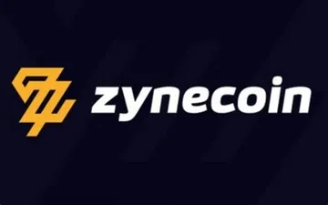
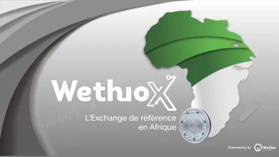
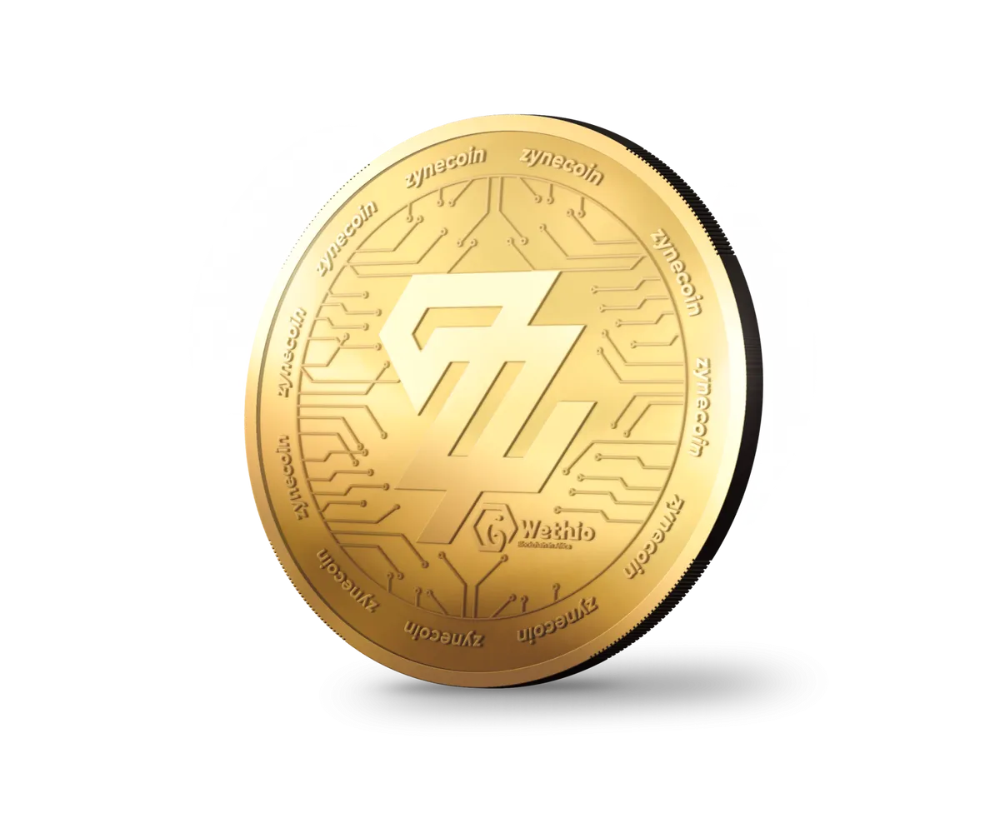

Bienvenue dans l’aventure de Wethio Project !
Ici nous allons expliquer dans les grandes lignes ce que sont les projets de Wethio.
Êtes-vous prêt ? Alors let’s go !
Quelle est la vision de Wethio Project ?
Depuis 2017, l’équipe de Wethio Project a remarqué qu’un changement de paradigme s’opérera entre 2019 et 2020, l’analyse est fondée sur plusieurs facteurs.
Le premier facteur est que l’humanité à cette période aura aligné les chiffres de 7, 777, 777, 777 d’êtres sur la planète. Il n’y a jamais eu autant d’hommes sur terre, et de nouveaux moyens vont voir le jour pour y faire fassent, cela bouleversera profondément nos modes de vie.
Le deuxième facteur, étant donné que le système capitaliste tel qu’on le connaît aujourd’hui risque de s’effondrer. Du fait d’une création monétaire à outrance, cela a conduit à creuser de plus en plus les inégalités entre les populations. Les premiers touchés seront la classe moyenne occidentale qui devra essuyer les dettes…
Mais d’un autre côté, bonne nouvelle ! Cet effondrement va permettre aux pays émergents africains de reprendre leurs pouvoirs.
Comment les pays africains vont reprendre leurs pouvoirs ?
L’équipe travaille sur le moyen pour permettre aux pays africains de reprendre leur souveraineté monétaire. Ce moyen est la blockchain !
En effet, c’est la technologie qui va révolutionner le web !
Le "web 3.0" va permettre aux personnes de détenir un bien numérique. On pourra non seulement détenir un bien numérique via un code qui fait office de certificat, mais aussi assurer une certaine sécurité, en toute transparence.
Aujourd'hui plus de 70 % de la population du continent africain a moins de 30 ans! À l'époque, Les pays africains n’ont pas connu le téléphone fixe. Ils sont passés directement au téléphone mobile. S'ajoutant à cela beaucoup n’ont pas de compte bancaire encore aujourd’hui. Il y a une porte d'entrée pour que la blockchain et les cryptomonnaies soient très vite adopté !
Pourquoi avoir crée la blockchain Wethio ?
Wethio Project est un projet parmi tant d’autres, mais ce qui le démarque hormis ses détracteurs qui crient au scam… c’est sa blockchain !

Qu’est-ce qui différencie ce projet des autres ?
La blockchain Wethio assure la décentralisation des échanges par un Proof of Stake and Vote (PoSV). C’est-à-dire pour faire simple, que des gens anonymes partout à travers le monde peuvent investir dans le Zynecoin. Pour assurer le bon fonctionnement en stockant ce dernier, pour permettre de faire en sorte que le livre de comptes qu’est la blockchain puisse fonctionner correctement et de manière décentralisée.
En effet, personne n’est aux commande à partir du moment où on donne de la force de travail à la blockchain, en stockant du Zynecoin tout en recevant des commissions sur les transactions effectuées sur le réseau.
En ce sens, ces commissions sont réparti entre plusieurs acteurs:
- 25% pour les États acceptant le Zynecoin.
- 25% pour les ONG.
- 50% pour les mineurs.
Comment faire connaître le Zynecoin au monde ?
Les négociations se font aux quatre coins du monde. L’équipe a emménagé dans des locaux à Dubaï récemment.
Dubaï est un pôle d’attractivité économique important au moyen-orient. Des acteurs du secteur de la crypto-monnaie sont aussi sur le coup comme Binance. La campagne marketing ainsi mise en place va ramener des investisseurs Anglophones et va faire augmenter le cours du Zynecoin de façon exponentielle !
En parallèle, la campagne se joue aussi dans les pays germaniques. Pour cela une équipe est positionnée à Zurich en Suisse. Cette communauté étant friand des écolieux, le Zyrri va ce révéler très attratif pour eux.
L’équipe de Wethio Project a pour objectif de toucher la communauté afro-américaine pour qu’il se reconnecte à leurs racines africaines. Pour cela, l’équipe organise des évènements avec des stars américaines, comme Jaafar Jackson pour ne citer que lui, tout au long de l’année 2022.
Ne ratez pas les nouvelles informations en vous abonnant au journal de Wethio Project sur youtube.
Comment le Zyrri va pouvoir être utile pour se mettre au vert ?
Le Zyrri est le token qui a pour but de faire acquérir aux investisseurs des villas dans un cadre idyllique pour quelques centaines de milliers d’euros. L'objectif étant pour les habitants de ce reconnecter à la nature, loin des pressions et des contraintes de la ville.
Bien que propriétaire de votre bien, vous pourrez la mettre en location et gagner des revenus passif. Ainsi vous permettez à vous et aux autres:
- de profiter d’une nourriture saine et produite en suivant les bonnes pratiques de permacultures
- d’une sécurité de vos biens et de vous même
- de tisser du lien social dans l’entraide et le partage
- de valoriser vos compétences en pratiquant votre métier dans l'écolieux ou de faire du nomadisme digital.
Comment l’Afrix sera utilisé sur WethioX ?

L’Afrix est le token de la plateforme d'échange de cryptomonnaies de Wethio project 100% africaine, WethioX. Il permet de bénéficier d'avantages pour les utilisateurs. Des équipes ayant un projet via la blockchain vont pouvoir côter leurs tokens. Il vont ainsi ramener une communauté, qui va s'intéresser à l'Afrix ce qui le feras naturellement grimper.
Ce qui change sur la plateforme WethioX c’est qu’il n’y a pas d’outils toxique que nous pouvons retrouver sur les autres plateformes comme par exemple les effets de leviers qui permettent de parier de l’argent que l'on a pas et ainsi avoir le risque de tout perdre.
Qu’est ce que le club Afrix V2 ?
Le club Afrix V2 est une suite au dernier club qui permettait d’acquérir de l’Afrix à un cour préférentiel auprès de l’équipe de Wethio project.
La version 2.0 a pour but de lever des fonds pour MisterZ, qui est un incubateur de projets. C’est grâce à lui que des milliers d’entrepreneurs pourront soumettre leurs idées sur la blockchain, sans connaissance technique.
Une intelligence artificielle va vérifier que le projet viable, (une forte demande, peu de concurrents... ). De plus, des experts vont examiner le projet. Si c’est validé alors un token va pouvoir voir le jour sur Wethio et être coté sur WethioX, et des personnes seront sélectionnées pour sa réalisation. Ils vont ainsi toucher une dotation sur le token en question. Si le projet n’arrive pas à aboutir une autre équipe pourra reprendre le relais pour le terminer.
En effet, MisterZ a une potentialité énorme de valorisation. Pour investir dedans, il faut appartenir au club et payer une cotisation de 150 euros minimum sur 18 mois.
Comment cela marche-t-il ?
Prenons un exemple: si la moyenne investit est de 200 euros alors l’investissement global d’un individu représente 2700 euros sur 18 mois. Sur un ensemble de 1200 investisseurs maximum, c’est 0,0008 pourcent de la somme investit !
Pour que les investisseurs puissent être gagnant dans l’affaire une dotation va être effectuer :
- Pour tout nouveau projet rentrant sur WethioX, 200 à 300 projets attendus, 20 % sur la somme que va payer l’équipe pour que son token soit côté sur la platemorme ,c’est-à-dire 2 à 3 bitcoin, sera mis dans la cagnotte du club Afrix ce qui représente environ 10 millions d’euros !
- Sur le token Afrix, l’équipe va stocker 177 millions d’Afrix qui vont être vendu quand il atteindra 0,10 centimes ce qui est largement envisageable. 17 millions d’euros est ajouté à la cagnotte !
- Sur chaque projets de MisterZ, un pourcentage du token sera aussi mis à disposition soit l'équivalent de 5 millions d’euros. Il suffit qu’un projet marche et c’est le jackpot !
Tout ceci représente au minimum 32 millions de d’euros. Cette somme sera répartit entre tout les investisseurs à la fin des 18 mois. Pour quelqu’un ayant investi 0,0008% de la somme totale, il aura en retour 26 000 euros ! Dans la mesure où son pourcentage ne varie pas.
Il y a possibilité d’investir plus pour avoir d’autres avantages comme une place d’expert sur MisterZ, à partir de 350 € !
Comment le Glouki trouvera-t-il sa place parmis tous ces projets ?
Le Glouki étant dédié aux enfants. Ils auront ainsi la possibilité d’accéder à un contenue éducatif et de permettre aux parents de contrôler leurs accès sur internet et la blockchain. Détenir du Glouki permet de leurs réserver une épargne de côté, bien plus rentable que le livret A !
Le développement de son utilisation est en cours de réalisation. Vous pouvez dès à présent le retrouver sur les marchés.
Comment un NFT peut-il reposer sur une valeur tangible ?

L'or est une valeur sûr. Dans toutes les crises ceux qui ont détenus de l'or n'ont pas subit d'inflation. L'équipe a donc décidée de créer une pièce en or reliée à un NFT. Pour permettre de faire un placement financier judicieux !
NFT + OR = le combo que personne n'attendait! Un certificat d’authenticité grâce aux NFT permet de détenir une pièce d’or. Par conséquent vous avez la valeurs du NFT plus la sécurité de l’or !
Comment ça marche?
Profitez du dernier engouement des NFT permettant d’être l’unique détenteur d’un bien numérique.
En plus de cela, vous aurez accès à une pièce d’or, que vous pouvez stocker chez vous ou la mettre en location dans un coffre dédié à Dubaï, ce qui facilite l’échange des pièces la plateforme WethioX.
La première pièce d’or NFT de la collection bitcoin c’est vendu au alentour des 30 000 euros !
Des nouvelles arrivent régulièrement. Rester connecté !
DISCLAIMER : Les informations contenues sur ce site sont fournies à simple titre informatif et ne doivent pas être considérées comme une invitation à investir, une sollicitation commerciale ou un appel public à l’épargne et ne constituent pas une offre d’achat, de vente, de souscription ou de fourniture de services financiers. En effet, elles ne doivent pas non plus être considérées comme une recommandation ou une sollicitation d’achat ou de vente. Ces informations vous sont fournies en l’état, et ont un but exclusivement informatif. Enfin, les investisseurs et détenteurs potentiels doivent demander l’avis d’un professionnel indépendant avant d’effectuer une transaction sur la base des informations publiées.